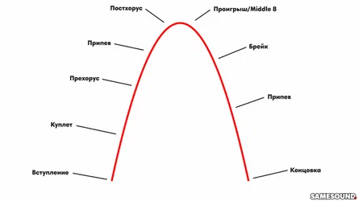

Электронная музыка
Изучите материал о жанрах музыки. Чтобы перейти к учебному материалу, кликните на каждую из иконок.
Изучите материал о жанрах музыки. Чтобы перейти к учебному материалу, кликните на каждую из иконок.
Типовая структура песни в популярной музыке
Чтобы понять типовую структуру композиции, нужно разобраться из каких частей обычно состоит песня. В
большинстве случаев, таких частей восемь:
Вступление/интро;
Куплет;
Прехорус/бридж;
Припев;
Постхорус/тэг;
Проигрыш
Брейк;
Концовка/оутро.
Одни части песни могут не входить в аранжировку, другие — повторяться несколько раз, хотя все зависит от
смысловой нагрузки, которую они несут, и желаний композитора.
Обычно каждая часть песни в аранжировке состоит из 8-16 тактов, хотя не редки случаи, когда длина отрезка
составляет 4, 12 или 32 такта. Количество тактов напрямую зависит от музыкальной идеи, которую вы реализуете
в конкретной песне.
Вступление/интро (Intro)
Небольшое введение в песню. Эта часть — первая, которая доносится до ушей слушателей. Задача вступления —
подготовить слушателя к остальным частям композиции, а также логично подвести аранжировку к первому куплету.
Зачастую от того, насколько хорошо и интересно сделано интро, зависит общее восприятие песни: если
вступление цепляет человека с первых аккоржов, то вероятность того, что он дослушает песню возрастает
многократно.
С точки зрения содержания, само вступление может быть любым, все зависит от фантазии автора. Его можно
сделать из одного-двух элементов основного трека (мелодия и ударные, бас и клавишные) или в аналогичном
припеву виде (интро полностью повторяет все составляющие припева). Длительность вступления также зависит от
желания композитора, но обычно интро укладывается в 2, 4 или 8 тактов.
Куплет (Verse)
Главная смысловая часть любой песни. Именно здесь располагается весь текст и общий информационный посыл
композиции. Помимо донесения основной мысли, в задачи куплета входит подготовка слушателя к последующим
частям песни.
В отличие от припева и бриджа, слова этой части песни обычно являются уникальными для каждого куплета.
Строго следовать этому правилу необязательно: в мире найдутся десятки и сотни отличных песен с очень
простыми куплетами.

Пример структуры песни и аранжировки. Композиция состоит из вступления, двух куплетов, четырех припевов,
соло или инструментального проигрыша и концовки. Песня укладывается в 3 минуты 30 секунд.
Прехорус/Бридж (Pre-Chorus/Bridge)
Бридж (от англ. Bridge — мост), или, как его называются в США, прехорус (от англ. Pre-Chorus — предприпев) —
связующее звено между куплетом и припевом. Так как припев является самой яркой частью песни, в аранжировку
добавляют бридж, который ослабляет контраст между куплетом и припевом.
Домашний интернет и кино 3 месяца бесплатно.
Перейти на сайт
Если гармония куплета и припева строится на одних и тех же аккордах, бридж может внести разнообразие в общую
канву композиции за счет измененной последовательности аккордов. С точки зрения слушателя, прехорус делает
композицию интереснее.
Припев (Chorus/Refrain)
Припев — одна из кульминационных частей композиции. Эта часть должна легко запоминаться, но не надоедать —
композиции хватит 2-4 припевов, отличающихся своей длиной. Так как припев самая повторяемая часть любого
трека, она содержит в себе главные лирические и музыкальные идеи. Именно здесь находится главный
информационный посыл композиции, а также музыкальный хук, цепляющий слушателя.
Обычно первое появление припева состоит из 8 тактов (одиночный припев), а второе появление — из 16 тактов
(двойное повторение припева с небольшими неявными изменениями). Последний припев песни, появляющийся в конце
композиции, может состоять из 16-32 тактов. По своему опыту скажем, что чем меньше припевов в конце песни,
тем лучше.
Постхорус/Тег (Post-Chorus/Tag)
Не редки случаи, когда последняя строчка припева выходит за рамки отведенных ей композитором тактов. Такое
положение вещей может стать проблемой, если текст следующей части песни (например, куплета) начинается с
затакта.
Чтобы слова не накладывались друг на друга, композиторы и аранжировщики вставляют 2-4 такта, которые
позволяют вокалисту немного передохнуть перед продолжением песни, а также делают музыкальное повествование
более гладким.
Постхорус аналогичен прехорусу и может быть любым: в виде припева или вступления с простым напевом
бэк-вокалистов, в виде инструментального проигрыша или наигрывания основной мелодии песни в немного
измененном виде. Здесь все зависит от фантазии аранжировщика и композитора, а также музыкальной составляющей
песни.
ЧТО ТАКОЕ ПОПУЛЯРНАЯ МУЗЫКА?
Когда мы говорим о популярной музыке, многие музыканты думают, что речь идет только о поп-музыке, но такое
суждение ошибочно. Определения «Популярная музыка» и «Поп-музыка» не синонимы, и относятся к совершенно
разным стилистическим направлениям. Термин «Поп-музыка» используется для определения конкретного жанра —
«поп».
Что же касается термина «Популярная музыка», то сюда относится огромное количество самых разнообразных
музыкальных стилей, не имеющих никакого отношения к поп-музыке: рок, фьюжн, ритм-н-блюз, индастриал, диско,
рок-н-ролл, регги, ню-метал, альтернатива и т.д. Таким образом, популярная музыка — это музыка разнообразной
стилистики, ориентированная на широкого слушателя.
Проигрыш (Middle 8)
На Западе проигрыш ближе к концу песни называют Middle 8, что дословно можно перевести как «средняя
восьмерка». Тем не менее, некоторые музыканты называют Middle 8 бриджем. Обычно эта часть отведена под
инструментальную составляющую: в Middle 8 чаще всего встречается соло или какой-либо проигрыш с измененными
партиями и мелодиями.
Смысловая нагрузка этой части — достигнуть кульминации композиции перед появлением последнего припева или
брейка. На протяжении песни динамика и энергетика композиции постоянно нарастает, достигая своего апогея
именно в проигрыше.
Как это понятно из английского названия, по своей длине проигрыш обычно составляет 8 тактов, хотя иногда
встречаются и более длинные варианты.
Брейк (Break)
Временами после проигрыша появляется еще одна небольшая вставка, именуемая брейком (от англ. Break — обрыв,
обвал, пауза). Смысл брейка в том, чтобы дать слушателю небольшую передышку. Согласитесь, слушать песню, в
которой постоянно что-то происходит, может быть утомительно.
Зачастую брейк отличается минимализмом и обычно строится на тех же аккордах и мелодии, что и припев. Иногда
брейк представляет собой небольшой и спокойный прехорус перед последним припевом. Средняя длина брейка — от
4 до 16 тактов.
Концовка/оутро (Outro)
Финальная часть песни. Может совпадать с вступлением или быть его полной противоположностью, представлять
собой несколько повторений припева с постепенным снижением громкости (затухание, Fade Out) или быть
совершенно уникальным и не похожим на другие части песни.
Какой будет концовка песни, зависит от остальных ее компонентов. В особо активных композициях есть смысл
уйти в тишину через повторение припевов, в балладах можно взять несколько других аккордов — решать это
только самому композитору.
Итоговая структура песни в популярной музыке

Песню можно представить в виде графика. Движение музыки, усиление напряжения и динамики идет по параболе —
то вверх, то вниз.
Если представить любую композицию в виде графика, то самым точным отображением станет парабола. На
протяжении всей песни музыка набирает обороты, достигает кульминации, а затем плавно выходит на концовку.
Часть песни Возможная длина
Вступление 2-8 тактов
Куплет 8-32 такта
Прехорус/бридж 2-16 тактов
Припев 8-16 тактов
Постхорус/Тэг 2-4 такта
Проигрыш 8 тактов (иногда 16)
Брейк 4-16 тактов
Концовка 2-4 такта
Не делайте все части будущего хита длиной 32 такта — у каждого элемента композиции своя длина, которой стоит
придерживаться. Каждая композиция требует индивидуального подхода, поэтому не перегружайте аранжировку и не
пытайтесь впихнуть в нее все части, которые только могут быть.
Типовая структура песни в электронной музыке
В отличие от популярной музыки, типичные электронные треки состоят из несколько иных частей. Дело в том, что
на аранжировку электронной музыки не в последнюю очередь влияет радио: песни должны вписываться в формат
профильных радиостанций, в котором нет места миксам бесконечной длины.
Вместе с тем, аранжировка танцевальных и электронных треков должна быть такой, чтобы под нее было комфортно
танцевать. Длинные секции нужно сменять короткими отрезками для передышки танцующих. Обычно танцевальная
композиция состоит из семи типовых частей:
Вступительный бит;
Брейкдаун;
Билд-ап;
Дроп;
Средний брейк;
Второй дроп;
Заключительный бит.